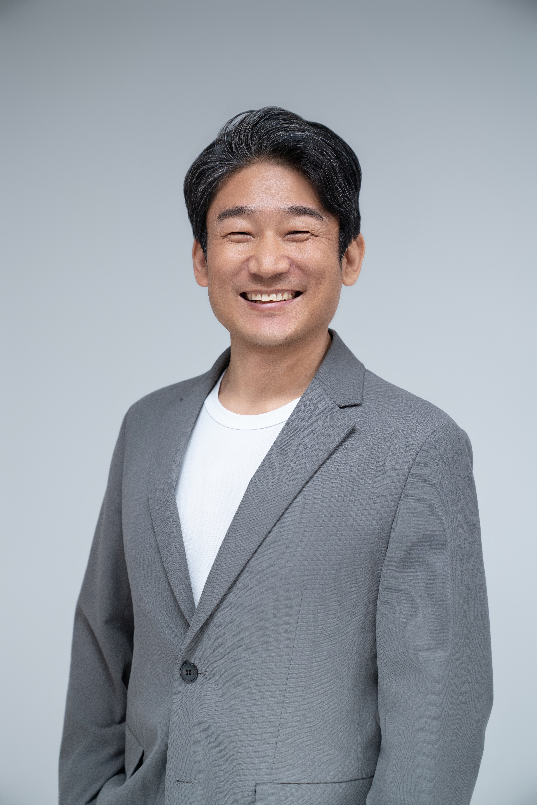
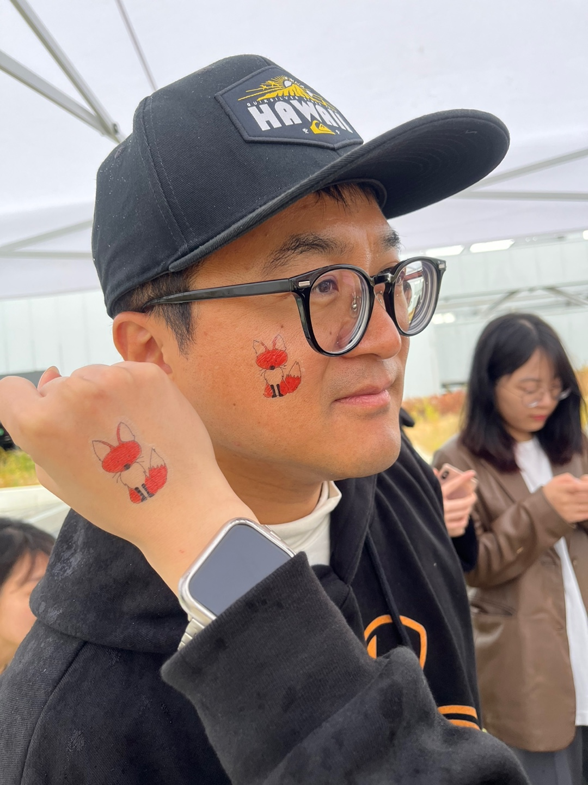
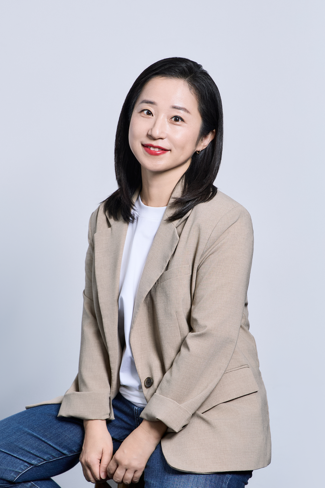

발표 소개
AI로 혼자 더 많은 일을 해낼 수 있게 되었는데, 우리는 왜 여전히 함께해야 할까요? 회사와 가족의 경계를 넘어, 느슨하게 연결된 사람들이 의미 있는 일을 함께하며 관계와 소속감, 함께 이루는 기쁨을 만들어가는 방법을 이야기합니다. 모두연의 한 랩으로 시작해 200여 명이 함께 일하고 배우고 즐기는 다오랩의 실험을 통해, 자발적인 참여가 공동의 성취로 이어지는 조건을 살펴봅니다.
- 연결
- 관계성
- 소속감
- 자율성
- 커뮤니티
연사 소개

한재선
모두의연구소 다오랩 랩장, KAIST 전산학과 겸직교수
한재선 박사는 연쇄창업가로서 넥스알, 퓨처플레이, 그라운드X를 창업 및 공동창업하고 운영했다. 현재 다오랩이라는 민간 연구 커뮤니티를 만들어 일과 조직의 미래에 대해 연구하고 실험하고 있다. 틈틈이 스타트업에 대한 투자와 자문을 하고 있고, KAIST 전산학부에서 겸직교수로서 블록체인과 웹3 강의를 하고 있다.

백종원
라움아트센터 기획실장, 다오랩3기
대기업과 호텔, 웹3 커뮤니티 기획 전문가로 활동하다가 지금은 아트센터 기획실장을 역임하고 있음. AI시대 진정한 연결 지능은 좋은 사람과의 관계에 있다는 생각으로 커뮤니티에서 다양한 분들과 작당하는 것을 즐기고 있다. 2년 전 다오랩 3기로 참여해 좋은 어른을 찾아 다니는 다오일주 길드장을 맡고 있으며, 최근 커뮤니티형 자율마켓인 다오마켓 프로젝트도 성공적으로 마쳤다.

신지현
서스틴브릿지 대표
신지현 | 서스틴브릿지 대표
IBM에서의 CSR 경력을 포함하여 ESG/CSR·마케팅 분야에서 약 25년간 실무 경험을 쌓은 글로벌 ESG·CSR 전문가입니다. <한 권으로 끝내는 ESG 수업> 저자, <ESG 생존경영> 공저자입니다. 글로벌 IT기업, IBM 등에서 마케팅과 지속가능경영, 기업의 사회적 책임 분야에서 일했고, 스타트업 C-level, 한국사회투자(현 큐네스티)에서 스타트업 ESG전략센터 부센터장으로 일했습니다. 스스로를 ‘Sustainfluencer(지속가능성을 위해 영향을 미치는 사람)’로 정의하고 ‘지속가능성’ 키워드 안에서 공존을 추구하는 사회를 만드는데 기여하려 합니다. 서스틴브릿지는 기업의 지속가능성을 위해 영리와 비영리의 연결, 인바운드와 아웃바운드 CSR/ESG 연결, 정부-민간-소셜섹터를 연결하는 가교 역할을 하며, ESG 경영 어드바이저리, 글로벌 CSR 프로젝트 기획·실행 두가지 영역에 집중하고 있습니다.